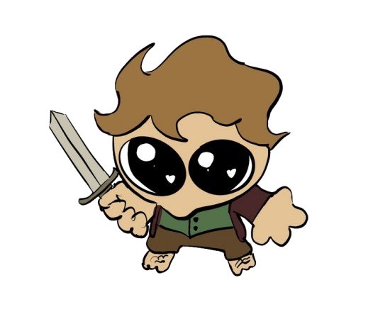
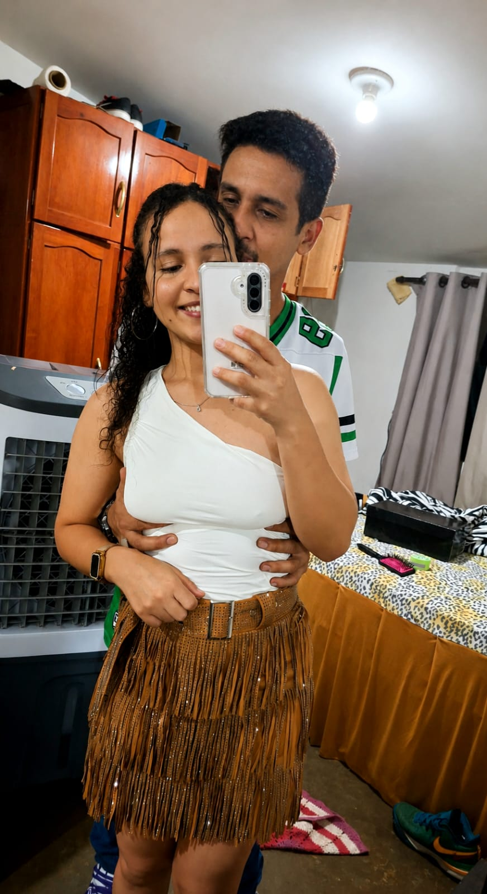

Status do sistema:
- Amor: 100%
- Paixão: 100%
- Confiança: 100%
- Saudade: 100%
- Conexão: Estável

Você ainda domina minha mente.
Meu coração pulsa na mesma frequência.
Cada segundo ao seu lado é um presente que eu guardo com todo carinho.

Nome: Marcos
Raridade: Única
Classe: Insubstituível
Peso: Carrega meu coração inteiro
Valor de mercado: Incalculável
Frases que me lembram você.
"É que você nasceu pra ser minha, vamos dividir uma casinha, uma cama, dormir de conchinha, Deus abençoou a nossa união"
- Os anjos cantam
Não existe um único dia em que eu não agradeça a Deus por você existir, acredito que oro mais por você do que por mim, porque o que preciso já tenho ao meu lado, então apenas posso agradecer e pedir para ele que você tenha tudo o que precisa.
"Essa é minha escolha, e eu escolho você, eu não preciso de imortalidade você é minha eternidade."
- Caraval
Não existe um paraíso em que você não esteja.
"Porque mesmo que não dure, mesmo que tudo de errado e eu fique sozinho e miserável, a menor chance de uma vida perfeita com você é infinitamente melhor do que uma vida imortal sem você."
- The Vampire Diaries
Percebi que te amava quando pela primeira vez eu quis ficar em um lugar e não ir embora, permanecer, persistir, tentar, mesmo com defeitos porque até eles aprendi a amar.
"Você acha que existe um dia perfeito?"
- Por Lugares Incríveis
Um dia perfeito para mim é aquele em que você faz parte, mesmo que em um lugar distante, porque saber que você existe já é suficiente.
"Eu te reconheceria na completa escuridão se eu fosse mudo e você surdo, eu te reconheceria em outras vidas, em outros corpos, em outros tempos e te amaria em cada um deles, até que a ultima estrela do universo se apagasse na completa escuridão."
- A Canção de Aquiles
Você é único para mim, não existe qualquer outra parte de você no universo e nenhuma parte de mim que não te amaria, mesmo que você não me amasse de volta.
"Em todas as vidas eu sei que irei te fazer me amar, porque gosto tanto de você que posso enlouquecer."
- Alquimia das Almas
Peço todos os dias que Deus me permita te amar até nas próximas vidas que viram, pois uma única vida nunca será o suficiente para te amar na intensidade que meu peito transborda.
"Não importa, nada disso importa, você não precisa ser mais a garota do tempo, e dai que a gente nunca mais veja o sol? eu quero você mais do que qualquer céu azul, o tempo que se dane."
- O Tempo Com Você
Do que adiantaria um céu azul em um mundo que você não estivesse? Quando reassisti pela quarta vez conseguia apenas pensar em você.
"I don't wanna get undressed
For a new person all over again
I don't wanna kiss someone else's neck
And have to pretend it's yours instead
And I don't wanna learn another scent
I don't want the children of another girl
To have eyes of the man I won't forget
I won't forget"
- Sombr - Undressed
Se não for com você, não quero que seja com mais ninguém.
"Eu amo tudo em você, mesmo as parte que você considera serem obscuras, e vergonhosas, cada cicatriz, cada falha, cada imperfeição. Eu amo você."
- Bridgerton
Amar é uma escolha e eu escolho te amar todos os dias, paixão pode ser algo passageiro, mas o amor é o que permanece mesmo nas dificuldades, podendo ir e escolhendo mesmo assim ficar..
Localização: Ao seu lado
Segurança: 100%
Paz: 100%
Saudade: Ativa
Destino: Construindo uma vida juntos...
Esse caminho ainda não está liberado, volte e crie mais memórias com a administradora.